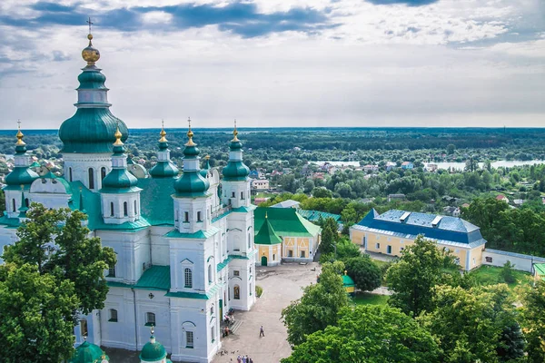

Ласкаво просимо до Чернігова!
Чернігів – найпівнічніше місто обласного значення в Україні. Воно розташоване на березі річки Десни, на кордоні України з Білоруссю і Росією. Історія міста налічує понад 1300 років. За часів Київської Русі Чернігів був другим після Києва в плані економічного розвитку і оборонних можливостей. Чернігів вважається центром православ’я, можливо тому місто оповите безліччю легенд, більшість з яких пов’язані з древніми монастирями. Чернігів приваблює туристів не лише багатим історичним минулим, а й також містикою і романтизмом.
